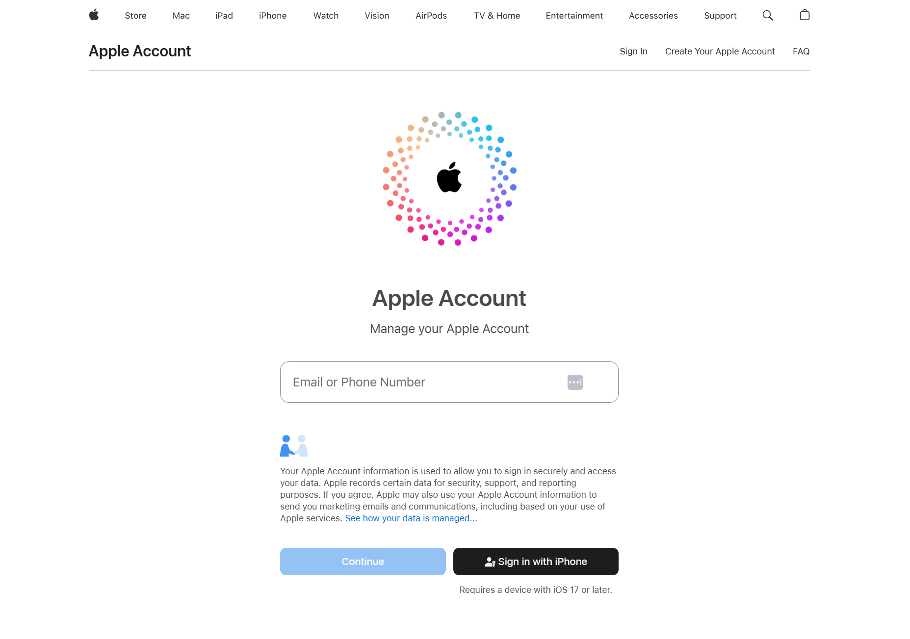
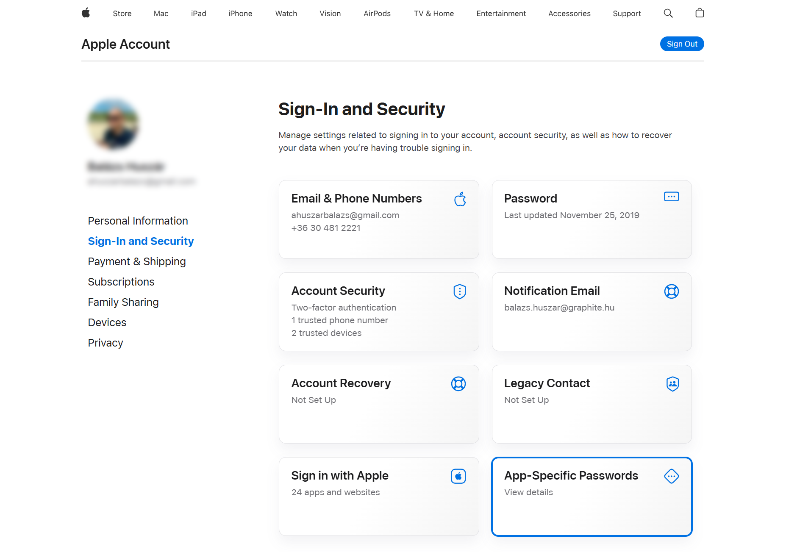
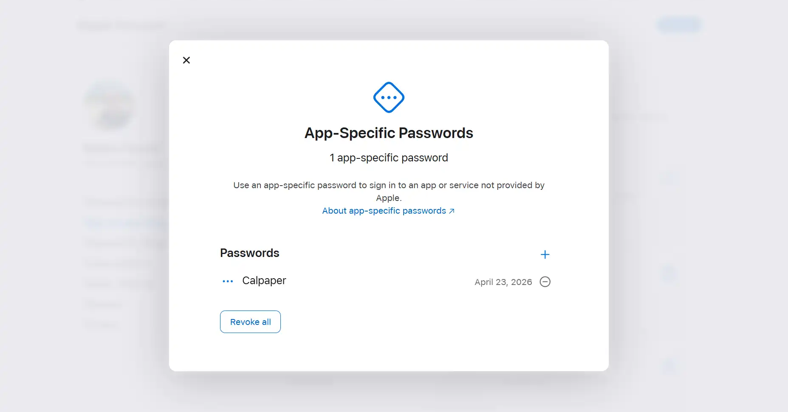
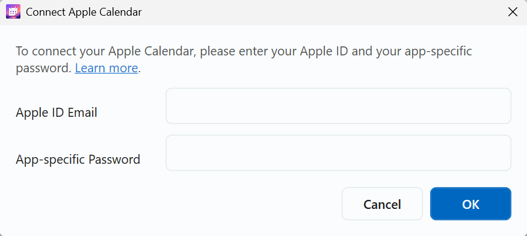

Connect Apple Calendar to CalPaper
Apple does not allow third-party apps to use your normal Apple Account password directly. To connect Apple Calendar in CalPaper, you first need to create a secure app-specific password.
Open Your Apple Account Settings
Go to account.apple.com and sign in with your Apple account.

Generate an App-Specific Password
Once logged into your Apple account:
- Go to Sign-In and Security
- Choose App-Specific Passwords
Enter a label such as CalPaper, then click Create.

Copy the Generated Password
Apple will generate a password similar to this:
abcd-efgh-ijkl-mnopCopy this password immediately, then keep it available for the next step.
- This is not your normal Apple ID password.
- CalPaper only uses this app-specific password.
- You can revoke it anytime from your Apple account settings.

Add Your Apple Calendar in CalPaper
In CalPaper:
- Open Calendars.
- Choose Add New Calendar.
- Select Apple.
Enter the following:
- Your Apple ID email address.
- The app-specific password generated in Step 3.
Then click OK.

Select Calendars to Sync
After connecting successfully:
- Choose which Apple calendars you want to display.
- Save your settings.
Your Apple Calendar events should now sync automatically with CalPaper.
Screenshot placeholder: Calendar selection screen
Apple Calendar can also be connected to CalPaper as an ICS calendar source if you prefer that route.
Fore more information read Apple’s official guide: Sign in to apps with your Apple Account using app-specific passwords .